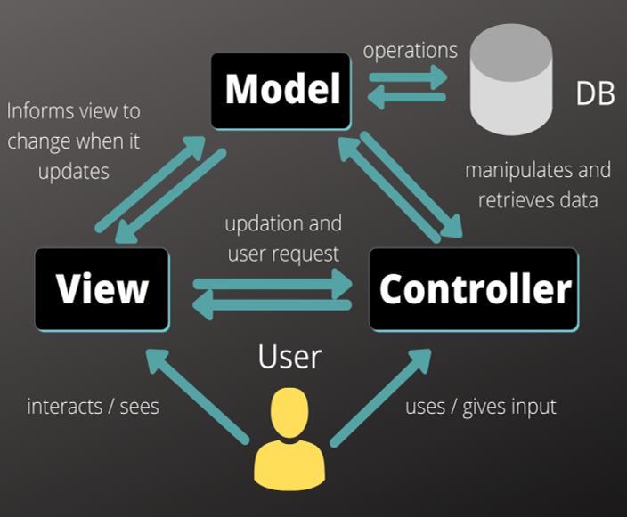

Typy webových aplikací
Vícevrstvé webové aplikace
Současné webové aplikace jsou strukturovány do více vrstev, nejčastěji využívají rozdělení na tři vrstvy:
- Prezentační vrstva
- Plní zpravidla webový prohlížeč
- Logickou vrstvu
- Dynamické generování webových stránek (PHP, ASP.NET, JSP, ...), jež se nejčastěji zpracovávají na straně webového serveru
- Datovou vrstvu
- Mohou tvořit databáze umístěné na databázovém serveru, ale zdrojem dat mohou být také datové soubory nebo internetové služby
Model-view-contoller
Architektura moderních webových aplikací velmi často vychází z návrhového vzoru (design pattern), označovaného zkratkou MVC (představuje první písmena slov model, view, controller). Základní myšlenkou MVC architektury je oddělení aplikační logiky od výstupu. Snaží se vyřešit problém tzv. "spaghetti" kódu, typickém zejména pro starší webové aplikace psané v jazyce PHP, kdy se jako špagety v jediném souboru proplétaly dlouhé části kódu, který řešil logické operace a zároveň i renderování výstupu. Udržování a rozšiřování takových aplikací je velmi náročné, obtížná je i týmová spolupráce.
Architektura moderních webových aplikací velmi často vychází z návrhového vzoru (design pattern), označovaného zkratkou MVC (představuje první písmena slov model, view, controller). Základní myšlenkou MVC architektury je oddělení aplikační logiky od výstupu. Snaží se vyřešit problém tzv. "spaghetti" kódu, typickém zejména pro starší webové aplikace psané v jazyce PHP, kdy se jako špagety v jediném souboru proplétaly dlouhé části kódu, který řešil logické operace a zároveň i renderování výstupu. Udržování a rozšiřování takových aplikací je velmi náročné, obtížná je i týmová spolupráce.
Model obsahuje logiku aplikace, k níž můžeme zařadit výpočty, databázové dotazy, validace a podobně. Jeho úkolem je podle zadaných parametrů zpracovat určitá vstupní data a připravit z nich data výstupní. Nerozhoduje o tom, jak bude se výstupními daty nakonec naloženo, jak budou zformátována a vypsána; model je zcela oddělen od výstupu. V případě použití ORM (objektově-relační mapování), korespondují modely přímo s databázovými tabulkami a představují třídy (např. kniha, autor, vypujcka), jejichž atributy se shodují s poli daných tabulek a metody většinou provádějí požadované operace s daty.Pro programování bez ORM můžeme využít principu manažerů. Může tak mít např. modely UserManager či ArticleManager. Obsahují metody k výběru potřebných údajů z databáze, např. metodu k výběru přezdívky a informací o uživateli při vypsání jeho profilu.
View (pohled) má na starost zobrazení výstupu dat, která mu byla předána. Může jít o pohled v podobě výpisu dat (sestavy), ale také o pohled s formulářem. Nejčastěji se k tvorbě pohledů používají tzv. šablonovací systémy, které umožňují do šablony, jejíž rámec tvoří HTML stránka, vkládat do symbolických bloků (často tvořených složenými závorkami) proměnné i různé příkazy (podmínky, cykly). Šablony se mohou vzájemně kombinovat a doplňovat - může např. existovat určitá výchozí šablona s layoutem stránek, kterou využívají a doplňují další šablony. Pohledy mohou obsahovat i minimální množství logiky, která je pro výpis nezbytná (např. kontrola, zda si uživatel vyplnil přezdívku před jejím vypsáním nebo cyklus s komentáři, které se vypisují).
Controller zprostředkovává komunikaci mezi klientem, modelem a pohledem. Každá entita mívá svůj vlastní controller - UserController, ArticleController atd.
Webové API
API (Application Programming Interface) označuje v informatice rozhraníproprogramování aplikací. Jde o komplex procedur, funkcí, tříd či protokolů nějaké knihovny, které může programátor využívat.API určuje, jakým způsobem jsou funkce knihovny volány ze zdrojového kódu programu. V programátorské praxi se můžeme setkat s celou řadou API - například s API operačních systémů (unixové systémy používají standard POSIX, OS od Microsoftu zase Windows API), grafickými API (OpenGL, DirectX, Vulkan) nebo s API databázových a informačních systémů. API se nyní hojně využívá při vývoji mobilních i webových aplikací a tvorbě internetových stránek. Smyslem webových API je zajištění komunikace mezi dvěma platformami, které si vzájemně vyměňují data. Umožňují využívat již naprogramovaná řešení a integrovat je do vlastních webů. V praxi se s integrací aplikačního rozhraní setkáváme třeba na stránkách zobrazujících polohu obchodu na Google mapách. V takovém případě je využito API z Google Map, které volají vrstvu kódu, jež zobrazuje požadovaná data. Další populární webová API: YouTube API – umožňují vývojářům integrovat videa a další funkcionalitu této populární multimediální platformy. Rozhraní lze tedy využít například pro zobrazení streamů na webu nebo pro vložení playlistu. Flickr API – nabízí přístup k databázi této populární sociální sítě na sdílení fotografií. Twitter API – pro sdílení tweetů nebo využití dat z vyhledávání. Amazon API – umožňují na webu zobrazovat produkty nabízené na stránkách Amazonu. Mohou tak být využity jako prostředek pro zpeněžení (monetizaci) stránek.
Typy webových API
K implementaci API lze přistupovat několika způsoby. Nejstarším prostředkem zůstává takzvaný Simple Object Access Protocol, zkráceně SOAP, určený pro volání procedur za využití XML. Jeho cílem je snazší sdílení informací různých aplikací, běžících v různých prostředích nebo v různých jazycích. Jedná se tedy o nástroj odstraňující bariéry mezi odlišnými platformami. Dnes je využíván převážně bankami a pojišťovnami; v ČR tento typ API využívá systém EET. V širším měřítku je ovšem vytlačován REST API (někdy RESTfull API). REST API je, na rozdíl od SOAP, architektura fungující na principu klient-server, kdy veškerá uživatelská data zůstávají uložena na straně klienta. Díky tomu by nemělo dojít k úniku citlivých dat. Jedná se o pravděpodobně nejpoužívanější řešení určené k tvorbě aplikačních rozhraní. Ke své funkci využívá HTTP protokol. Následníkem REST API je GRAPHQL, původně vyvíjené Facebookem, který ho také používá v rámci své sociální sítě. Časem se z něj stal open-source a může tak být bezplatně využíván širokou veřejností. GRAPHQL je jazyk dotazů, který běží na straně serveru. Umožňuje stahovat data z více zdrojů najednou, což znatelně ulehčuje práci programátorů. Nabízí větší rychlost zpracování než REST API, má bohatší škálu využití, není závislý na architektuře a lze ho implementovat i nad stávající REST API.
REST API
Architektura rozhraní pro distribuované systémy. Úzce souvisí s HTTP a je datově orientovaná - určuje způsoby, jakými lze přistupovat k datům. Odděluje klientskou a serverovou část, díky čemuž je stejně jako GraphQL nezávislá na platformě a umožňuje nezávislý vývoj serveru a klienta. Klient pak při dotazech potřebuje znát tzv. endpointy (koncové body - předepsané URL požadavky), na které zasílá dotazy (případně i data). Komunikace mezi klientem a serverem je bezestavová, server neukládá žádné informace a veškerou odpovědnost přenáší na klienta. Klient tedy musí dotaz uspořádat tak, aby byly využity všechny související koncové body, přičemž má každý zdroj svůj vlastní identifikátor, který musí být v případě nutnosti zavolán. Za účelem snížení latence (odezvy) REST API využívá cache, mezipaměť, do které ukládá dotazy při větším objemu dat, nebo před dalším použitím. Data tedy musejí být označena buď jako kešovatelná, nebo nekešovatelná. Pokud jsou kešovatelná, systém předpokládá, že se s nimi bude v budoucnu ještě pracovat a ponechá je ve zmíněné mezipaměti. Touto cestou se zlepšuje výkon na straně klienta. Na druhou stranu ovšem narůstá šance na ztrátu aktuálnosti informací.
Aplikace s využitím WebSocket
WebSocket je nezávislý počítačový komunikační protokol, poskytující plně duplexní (obousměrný) komunikační kanál přes jediné TCP připojení. Je navržen tak, aby mohl být prováděn ve webových prohlížečích a na webových serverech, ale může být použita jakákoliv klientská a serverová aplikace. Jeho jediný vztah k HTTP je, že jeho handshake (navázání spojení) je interpretováno HTTP servery jako požadavek na upgrade. Umožňuje interakci mezi prohlížečem a webovým serverem s nižší režií, usnadňuje real-time přenos dat. Využívá se pro vytváření aplikací v reálném čase, jako jsou online chaty, kooperativní služby (např. sdílená tabule, videokonference), online hry apod. V současné době je podporován většinou hlavních prohlížečů, vyžaduje však podporu také na straně serveru. Nejčastěji se k vývoji těchto aplikací používá Javascriptová knihovna Socket.IO, kterou tvoří klientská část a serverová část určená pro Node.js. Obě tyto komponenty mají identické API. Aplikace využívající Socket.IO jsou založeny nejčastěji na vysílání (socket.emit) a přijímání (socket.on) zpráv mezi klienty, kteří jsou prostřednictvím socketů připojeni k serveru.
Django
Django je open source webový aplikační framework napsaný v Pythonu, který byl pojmenován po jazzovém kytaristovi Django Reinhardtovi. Hlavní úkol Djanga je snadné vytvoření komplexních, databází řízených webových aplikací. Zaměřuje se na znovupoužitelnost, propojitelnost komponent a rychlý vývoj v duchu „DRY“ (Don’t Repeat Yourself – "neopakuj sám sebe"). Django vychází z architektury MVC (Model-View-Controller), jež je v tomto případě modifikována do podoby MVT (Model-View-Template). Centrálním řídicím prvek aplikace je totiž systém zobrazení (View), který operace s daty řeší ve spolupráci s modelem a samotné zobrazení stránek zajišťují tzv. šablony (templates) s podporou šablonovacího systému. Datový model je definován pomocí tříd v Pythonu a prostřednictvím objektově relačního mapování (ORM) může být fyzicky realizován v různých relační databázových systémech. K specifickým rysům Djanga patří možnost automatické tvorby administrace projektu, která je generována dynamicky podle datového modelu. Framwork navíc nabízí: Odlehčený, samostatný webový server pro vývoj a testování. Serializační a validační systém pro formuláře, který automaticky překládá data mezi formulářem HTML a hodnotami vyhovujícími databázi. Cachovací framework, který nabízí několik různých metod cachování. Podporu tříd, které mohou zasáhnout v různých stádiích vyřizování požadavku a provést vlastní funkce. Vnitřní komunikační systém pro komunikaci mezi komponentami pomocí předem dohodnutých signálů. Možnost překladu všech komponent do libovolného jazyku. Serializační systém, který může produkovat nebo číst reprezentaci XML a/nebo JSON instancí modelu Django. Systém rozšiřujících schopností šablonovacího enginu.
Django aplikace
Projekt je chápán jako nejvyšší úroveň v Djangu a může být vytvořen z příkazové řádky příkazem: python django-admin.py startproject (název projektu). Součástí projektu může být jedna nebo více aplikací. Každá aplikace musí být zaregistrována v konfiguračním souboru settings.py, který je společný všem aplikacím v Djangu. Součástí konfiguračního souboru je mimo jiné nastavení připojení k databázi a připojení k SMTP serveru pro snadné posílání emailů, konfigurace tzv. middleware (komponenty, které v aplikaci zajišťují určité speciální služby - např. autentizaci nebo zabezpečení), nastavení časového pásma, registrace aplikací do projektu nebo deklarace důležitých konstant. Projekt i jednotlivé aplikace je možné spravovat pomocí skriptu manage.py. Mezi jeho základní úlohy patří vytvoření základní struktury nové aplikace (python manage.py startapp), vytvoření databázového schématu a provedení tzv. migrací (python manage.py makemigrations, python manage.py migrate) nebo spouštění testovacího webového serveru (python manage.py runserver). Soubory pojmenované urls.py mají na starost směrování požadavků na jednotlivé view, které se nacházejí v souboru views.py. Soubory models.py obsahují modely pro danou aplikaci. Šablony pro zobrazení stránek mají strukturu souborů HTML obohacených o instrukce (makra) šablonovacího systému. Jsou uloženy ve složce templates. Samotný šablonovací systém je velice flexibilní a nabízí vytváření vlastních rozšíření i využití dědičnosti šablon. Ta umožňuje v potomkovi předefinovat či rozšířit sekce definované v předkovi: {% block nazev_sekce %} … {% endblock %}
Fáze návrhu webové aplikace
- Strategie
- Specifikace požadavků
- Návrh struktury
- Základní model a kostra
- Vizuální vzhled
- Testování
Hledání kompromisu mezi potřebami uživatelů budoucí aplikace a zájmů tvůrců aplikace. Je třeba zjistit a pochopit cílovou skupinu uživatelů, jejich způsob uvažování a zvyky, zohlednit je v návrhu aplikace.
Na základě získaných informací jsou specifikovány všechny funkce a možnosti, jež by měla aplikace a její GUI pokrývat. Výsledkem by měl být dokument s popisem požadovaných funkcí a forem obsahu.
V této fázi se řeší tzv. interakční design; pomocí Use Case diagramů (případu užití) se zobrazují vazby mezi jednotlivými částmi aplikace a akce, které bude uživatel moci provádět, včetně možných reakcí aplikace.
V této fázi se řeší tzv. informační design (jak prezentovat informace generované aplikací, aby došlo k jejich správnému pochopení), interface design (výběru jednotlivých druhů GUI komponent k provedení určité činnosti) a design navigace (jak se budou v prostředí aplikace pohybovat uživatelé). Celkový pohled lze získat sdružením poznatků a vytvořit drátěný model uživatelského rozhraní - wireframe. Jeho cílem je určit hlavní části aplikace a ilustrovat jejich přibližné rozmístění (schématické obrázky, v nichž jsou potlačeny detaily vzhledu GUI komponent i obsahu).
Webdesignéři připravují vizuální vzhled jednotlivých komponent stránky podle vytvořených wireframů a storyboardů. Na základě grafického manuálu vznikají barevná schémata, která budou v aplikaci použita, jsou vybírány typy písem a vytvářen graficky homogenní vzhled všech komponent.
Může probíhat v uzavřené skupině i v testovacím provozu aplikace pomocí speciálních analytických nástrojů pro web (analýzy návštěvnosti, teplotní mapy, sledování pohybů myši a kliknutí, nahrávání uživatelské aktivity atd.).
Bezpečtnostní rizika webových aplikací
Cross-site scripting
- metoda narušení WWW stránek využitím bezpečnostních chyb ve skriptech (především neošetřené vstupy).
- Útočník díky těmto chybám v zabezpečení webové aplikace dokáže do stránek podstrčit svůj vlastní javascriptový kód, což může využít buď pouze k poškození vzhledu stránky, jejímu znefunkčnění, získávání citlivých údajů návštěvníků stránek nebo obcházení bezpečnostních prvků aplikace.
- Často je též využíván při phishingu tak, že je skrze XSS zranitelnosti uživateli ukázán jiný obsah na jinak důvěryhodné stránce.
Obrana:
- V textech zadávaných uživateli je třeba speciální znaky nahrazovat entitami.
- Kontrolovat URL od uživatele, která jdou do obrázků, odkazů a podobně, protože mohou začínat např. na javascript:. Kvůli různým variacím a budoucím změnám je vhodné použít pro tuto kontrolu whitelist.
Cross-site request forgery
- pasivní útok, kdy útočník nachystá na nějakou stránku kód, který způsobí vyvolání URL na nějakém jiném serveru, kde uživatel může být stále přihlášen.
Obrana:
- Důležité akce (třeba převod peněz) je třeba potvrzovat, do přihlašovacích formulářů je třeba přidávat náhodně generované hodnoty.
- V administrační části internetových aplikací, pro akce, které mažou určité záznamy nebo je jiným způsobem mění, se doporučuje zásadně používat HTTP metodu POST.
- Používat autorizační token – náhodně vygenerovaný řetězec pro danou akci a pro aktuálního uživatele.
Clickjacking
- Cizí stránka, na kterou je veden útok, je zobrazena na útočníkově stránce v iframe tak, že je vidět jen část bez bližšího kontextu. (Je možné využít i opacity v CSS.) Uživatel je naveden ke kliknutí na tuto část stránky, čímž provede nějakou akci, například hlasování v anketě.
Obrana:
- Lze se bránit hlavičkou X-Frame-Options, která je v některých prohlížečích podporována, a Javascriptem. Princip spočívá v zabránění zobrazení stránky v rámci.
Session hijacking
- Útok, při kterém útočník odposlechne cookie použité pro označení úspěšně autentizovaného uživatele, a začne se za něj vydávat.
Obrana:
- Session cookies musí mít označení secure, tedy mohou být poslána jen přes šifrovaná SSL spojení.
- V případě předávání session ID přes URL je obrana komplikovanější, vyžaduje zabránit úniku URL přes referer (odkazy, obrázky, ...) a Session fixation.
Phishing
- Aktivní útok využívající sociální inženýrství, při kterém útočník vydává svoje vlastní webové stránky za oficiální stránky instituce / aplikace, aby získal přihlašovací údaje uživatele.
Obrana:
- Vzdělávání uživatelů v kontrole autentizace serveru, použití Extended Validation SSL Certificates.
SQL Injection
- Technika napadení databázové vrstvy programu vsunutím (odtud „injection“) kódu přes neošetřený vstup a vykonání vlastního pozměněného SQL dotazu.
Obrana:
- Důsledné používání tzv. PreparedStatement a jeho setXXX() metod pro nastavování hodnot.
- Tam kde se nejedná o hodnotu (třeba název sloupce v ORDER BY), zkontrolovat vstup regulárním výrazem na očekávané hodnoty.
Redakční systémy a e-commerce
Redakční systémy
- Jedná se zpravidla o komplexní webovou aplikaci používanou pro tvorbu a úpravu obsahu webu bez znalostí kódování.
- CMS tak může ušetřit náklady na aktualizaci obsahu webu, protože změny částí stránek může provádět i zaškolená obsluha bez znalosti kódu HTML, CSS či dalších technologií
- Složitější CMS umožňují vkládání různých článků a spotů (včetně tabulek a obrázků) do předem určených kategorií, případně úpravu všech textů na webu.
- Používají se k tomu tzv. WYSIWYG editory, jejichž ovládání se velmi podobá ovládání běžných desktopových textových procesorů (např. MS Word), které fungují v internetových prohlížečích a v pozadí generují HTML kód.
- Častou funkcí CMS je i správa obrázků a celých fotogalerií, většina redakčních systémů obsahuje i moduly pro správu multimediálního obsahu, včetně audio a video souborů.
Populární redakční systémy
| CMS | Výhody | Zápory |
|---|---|---|
| WordPress | Jednoduchý, snadná údržba | Nevýhodný pro rozsáhlé weby |
| Joomla! | Jednoduchý, podpora mobilních uživatelů | Není vždy tak snadný jako WordPress |
| Drupal | Vhodný pro propracovanější weby | Obtížneji použitelný |
E-commerce
Pojem e-commerce je používán k označení různých obchodních transakcí realizovaných prostřednictvím Internetu a dalších elektronických prostředků. Podle cílové skupiny rozlišujeme několik typů e-commerce:
- B-2-B (Business to Business, obchodník obchodníkovi)
- B-2-C (Business to Consumer, obchodník zákazníkovi)
- C-2-B (Consumer to Business, zákazník obchodníkovi)
- C-2-C (Consumer to Consumer, zákazník zákazníkovi)